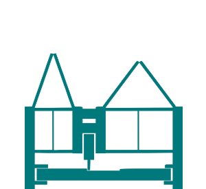

← Will Makes Things.

foldafab, 2013
As part of a class entitled Mechanical Invention Through Computation (taught by Chuck Hoberman and Erik Demaine), fellow CBA'er Sam Calish and I built foldafab, a deployable CNC router. The foldafab is a CNC router that has a reasonably large 15"x15"x2" work envelope but can be folded up and carried like a suitcase.

It uses a Sarrus linkage as it's primary axis. This is what enables the machine to be compactly stored but also have a relatively large travel. The hinges are flexural and made by milling polypropylene down to a thin section.

The other axes uses a rack and pinion drive system. This enables the system to be modular such that units can be snapped together end-to-end to increase the work envelope even further.

One of my favorite parts of the machine are the super fancy heat-sinks we made for the stepper drivers on the waterjet. It turned out to be crucial for consistent operation and added some style to the GRBL shield.

Another fun part of the project was using the Instron to characterize the stiffness of the linkage. This was especially important since we were using flexural hinges.
 |  |
More media can be found on the MTM website.